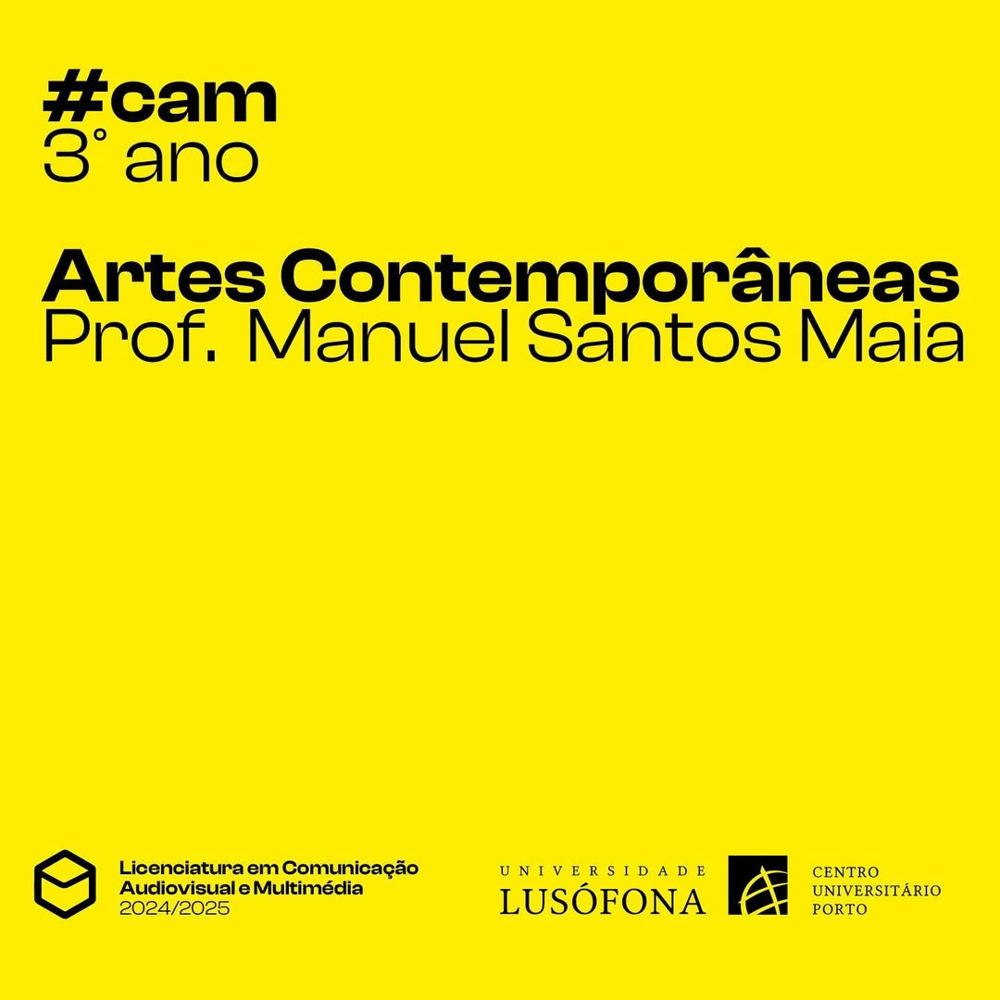
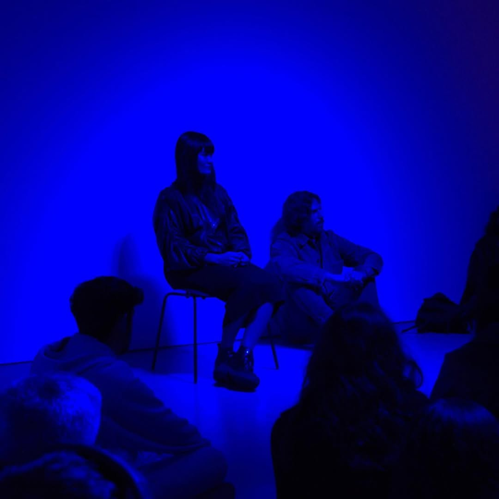
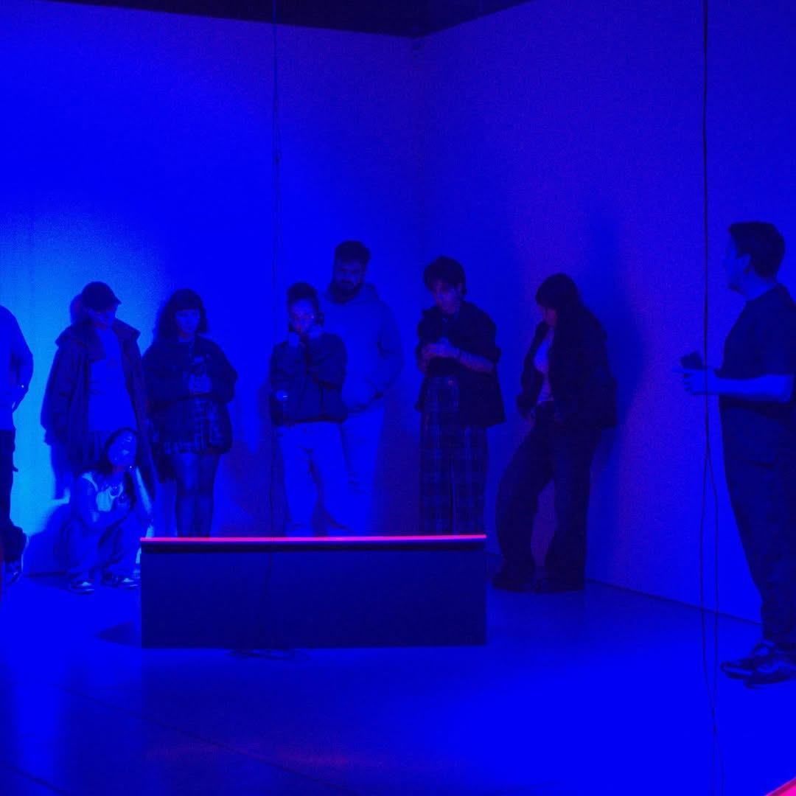
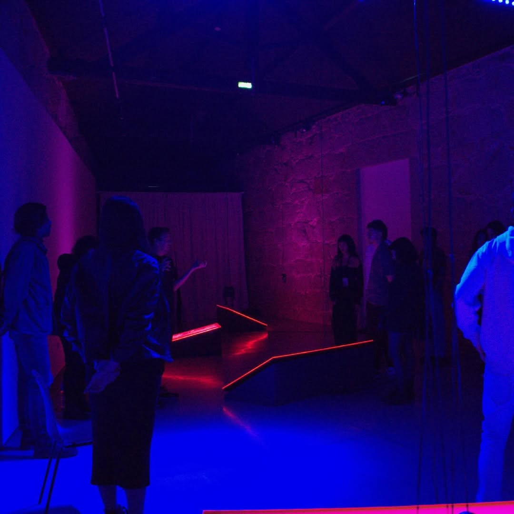
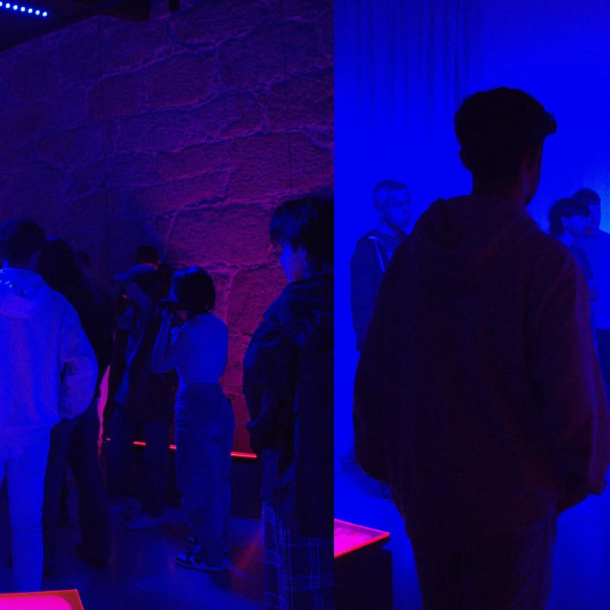
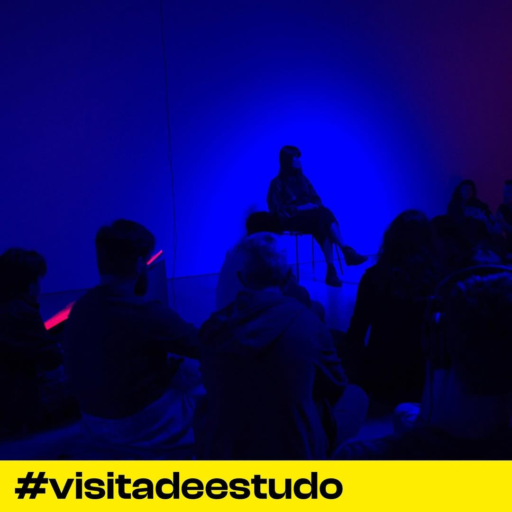

HALL OF FAME
Ao longo de mais de 15 anos, os nossos estudantes criaram dezenas de filmes, fotografias, aplicações web e multimédia e exposições. Destacamos apenas alguns dos muitos projetos interessantes criados em CAM ao longo da nossa história.
PROJETOS EM DESTAQUE
Audiovisual / Reel
Workshop de Som
Captação e edição sonora em ambiente de estúdio.









Fotografia / Coletivo
Exposição Multimédia
Seleção de trabalhos práticos do semestre.
OS NOSSOS GRADUADOS

Eliabe Campos
CEO Overall Studio / Fotógrafo e Videógrafo“O curso de CAM não me preparou apenas para entrar no mercado de trabalho “tradicional”... foi o ponto de partida para tudo o que construí até agora.”

Monique Moreira
UI Designer“A formação em CAM deu-me uma base importante de cultura visual... essas referências continuam a influenciar a forma como observo e crio soluções digitais.”